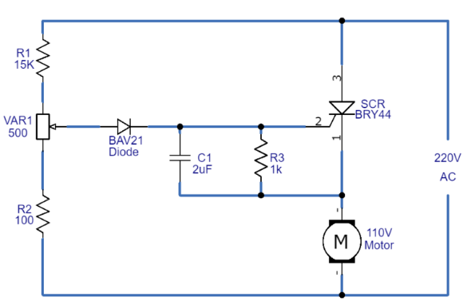

<html lang="pt-BR"></html>
<head>
    <base href="/" />
    <meta charset="UTF-8">
    <title>Simulador de Controle de Velocidade de Motor AC - Versão Avançada</title>
 <link rel="stylesheet" href="assets/css/style.css">
    
    
 <link href="https://cdn.jsdelivr.net/npm/bootstrap@5.3.3/dist/css/bootstrap.min.css" rel="stylesheet" integrity="sha384-QWTKZyjpPEjISv5WaRU9OFeRpok6YctnYmDr5pNlyT2bRjXh0JMhjY6hW+ALEwIH" crossorigin="anonymous">
 

</head>
<body>

<header>
    <div class="container">
        <h1 class="header text-lg-center">Atividade A3 - Eletrônica Industrial 2024/2</h1>
        <h6 class="header text-lg-center">Atividade Final de Curso - Engenharia: Projeto de Aplicação em Eletrônica Industrial</h6>
        <h5 class=" col text-md-center">Professora Priscila Borges de Morais  </h5><br>

        <div class="alunos"><!--  Modal trigger button  -->
        <button
            type="button"
            class="btn btn-primary btn-lg"
            data-bs-toggle="modal"
            data-bs-target="#modalId"
        >
            Alunos do projeto
        </button>
        
        <!-- Modal Body-->
        <div
            class="modal fade"
            id="modalId"
            tabindex="-1"
            role="dialog"
            aria-labelledby="modalTitleId"
            aria-hidden="true"
        >
            <div class="modal-dialog" role="document">
                <div class="modal-content">
                    <div class="modal-header">
                        <h5 class="modal-title col text-md-center" id="modalTitleId">
                            Alunos do projeto
                        </h5>
                        <button
                            type="button"
                            class="btn-close"
                            data-bs-dismiss="modal"
                            aria-label="Close"
                        ></button>
                    </div>
                    <div class="modal-body">
                        <div class="container-fluid"><div
                            class="row-cols-1 justify-start align-items-center g-3"
                        >
                            <div class="col text-md-center">Abelardo Andrade Silva - RA 821219021 - Engenharia da Computação Live</div><br>
                            <div class="col text-md-center">Guilherme Lage Andrade - RA - 321215835 - Engenharia da Computação Live</div><br>
                            <div class="col text-md-center">Muryllo Oliveira Satana - RA - 8222242965 - Engenharia da Computação Live</div>
                        </div>
                        </div>
                    </div>
                    <div class="modal-footer">
                        <button
                            type="button"
                            class="btn btn-secondary"
                            data-bs-dismiss="modal"
                        >
                            Close
                        </button>
                        
                    </div>
                </div>
            </div>
        </div>
        </div>
    </div>
</header>    
    <div class="container">
        <div class="header">
            <h1>Simulador de Controle de Velocidade de Motor AC</h1>
<p>Bem-vindo ao nosso sistema avançado de simulação e monitoramento de motores AC.</p>
<p>Utilize o botão Ligar/Desligar para iniciar ou interromper o funcionamento do motor. Ajuste a velocidade arrastando a bolinha azul na barra de controle e acompanhe o desempenho do equipamento através dos gráficos exibidos no painel.</p>

        </div>

        <div class="main-content">
            
   <!--Modal do Circuito -->
    <div id="circuitModalScript" class="modal">
        <div class="modal-content">
            <span class="close-modalB">&times;</span>
            <h2>Apresentação</h2>
            <p>Bem-Vindo(a) ao Diagrama esquemático do circuito de controle de motor AC</p>
            <h3>Sobre o projeto</h3>
            <p>
                Neste projeto apresentamos o desenvolvimento e análise de um circuito de controle de velocidade para motor AC utilizando um SCR (Retificador Controlado de Silício). O circuito foi projetado para permitir o ajuste da velocidade do motor através da variação do ângulo de disparo do SCR, controlado por um potenciômetro. Resultados de simulações foram obtidos para verificar a eficiência do controle de velocidade.
            </p>
            <h3>Introdução</h3>
            <p>
                O controle de velocidade de motores AC é essencial em diversas aplicações industriais e de automação, onde a precisão e a eficiência energética são cruciais. O circuito de controle apresentado utiliza um SCR para ajustar a velocidade do motor através do controle da condução do semiciclo de corrente alternada.
            </p>
            <p>
                Um Retificador Controlado de Silício (SCR) é um dispositivo semicondutor de três terminais que permite o controle de corrente através de um sinal de disparo. Neste circuito, o SCR controla a passagem de corrente para o motor, ajustando a velocidade por meio da variação do ângulo de disparo.
            </p>
            
                <h3>Materiais e Métodos</h3>
            <p>
                <h5>Objetivo:</h5> <p>Desenvolver um sistema de controle de velocidade para motor AC usando componentes eletrônicos.</p>
                <h5>Requisitos:</h5> <p>Ajustar a velocidade de um motor AC de forma eficiente e precisa.</p>
                <h5>Justificativa:</h5> <p>
                    Controlar a velocidade do motor sem a necessidade de variadores de frequência complexos e caros.
                    <h5>Método:</h5> O circuito foi simulado para ajustar o ângulo de disparo do SCR e observar os efeitos na velocidade do motor.
                </p> 
                
            </p>
            <h3>Diagrama de Blocos</h3>
                <p>
                    <h6>Fonte de Alimentação AC (220V): </h6><p>Fornece a tensão necessária para o circuito.</p>
                    <h6>Seção de Controle (SCR, Potenciômetro, Diodo):</h6> <p>Controla o ângulo de disparo e, consequentemente, a condução do SCR.</p>
                    <h6>Motor AC: </h6><p>Recebe a potência modulada pela seção de controle para ajustar a velocidade.</p>
                </p>
                <h3>Esquemas dos Circuitos</h3>
<p>O esquema do circuito é mostrado logo abaixo do simulador.</p>

<h3>Resultados das Simulações</h3>
<p>
    <h6>Gráficos: </h6><p>Gráficos de tensão vs. tempo e velocidade do motor vs. ângulo de disparo podem ser apresentados.</p>
    <h6>Análise dos Resultados:</h6> <p>A variação do ângulo de disparo do SCR afeta diretamente a velocidade do motor, com ajustes precisos obtidos através do potenciômetro.</p>
</p>
<h3>Discussão</h3>
<p>Durante o desenvolvimento do circuito, surgiram desafios relacionados ao controle de disparo do SCR e à precisão do controle de velocidade. Soluções foram implementadas para garantir a estabilidade do circuito, e sugestões para aprimoramento incluem o uso de filtros de ruído para reduzir oscilações indesejadas.</p>

<h3>Considerações Finais</h3>
<p>O circuito desenvolvido demonstra que é possível controlar a velocidade de um motor AC de forma eficiente e econômica, utilizando componentes eletrônicos básicos. Este projeto é aplicável em pequenas automações industriais e domésticas.</p>
<h3>Referências Bibliográficas</h3>
<article>Rashid, M. H. Power Electronics: Circuits, Devices, and Applications. 4ª Edição. Pearson, 2013.

    Este livro cobre os fundamentos e aplicações de dispositivos de potência, incluindo SCRs, e é uma excelente fonte para entender circuitos de controle de motores.</article><br>
    <article>Alexander, C. K., & Sadiku, M. N. O. Fundamentals of Electric Circuits. McGraw-Hill, 2016.

        Uma referência fundamental para estudantes de eletrônica, que cobre os princípios básicos de circuitos elétricos, incluindo dispositivos semicondutores como SCRs.</article>
        <div class="modal-footer">
            <button type="button" class="btn btn-secondary" onclick="closeCircuitModal()">Fechar</button>
        </div>
        </div>
    </div>


            <div class="simulation-panel">
                <div class="dashboard">
                    <div class="gauge">
                        <div class="gauge-label">VELOCIDADE (RPM)</div>
                        <div class="gauge-value" id="rpmValue">0</div>
                        <div class="telemetry-details">Máx: 1750 RPM</div>
                        <div class="graph">
                            <div class="graph-line" id="rpmGraph"></div>
                        </div>
                        <div class="history-graph-mini">
                            <canvas class="history-canvas"></canvas>
                        </div>
                    </div>
                    <div class="gauge">
                        <div class="gauge-label">POTÊNCIA</div>
                        <div class="gauge-value" id="wattsValue">0</div>
                        <div class="telemetry-details">Potência Nominal: 275W</div>
                        <div class="graph">
                            <div class="graph-line" id="wattsGraph"></div>
                        </div>
                        <div class="history-graph-mini">
                            <canvas class="history-canvas"></canvas>
                        </div>
                    </div>
                    <div class="gauge">
                        <div class="gauge-label">CORRENTE</div>
                        <div class="gauge-value" id="ampsValue">0.00</div>
                        <div class="telemetry-details">Corrente Nominal: 2.5A</div>
                        <div class="graph">
                            <div class="graph-line" id="ampsGraph"></div>
                        </div>
                        <div class="history-graph-mini">
                            <canvas class="history-canvas"></canvas>
                        </div>
                    </div>
                    <div class="gauge">
                        <div class="gauge-label">TENSÃO</div>
                        <div class="gauge-value" id="voltsValue">0</div>
                        <div class="telemetry-details">Tensão Nominal: 110V</div>
                        <div class="graph">
                            <div class="graph-line" id="voltsGraph"></div>
                        </div>
                        <div class="history-graph-mini">
                            <canvas class="history-canvas"></canvas>
                        </div>
                    </div>
                    <div class="gauge">
                        <div class="gauge-label">TEMPERATURA</div>
                        <div class="gauge-value" id="tempValue">25°C</div>
                        <div class="telemetry-details">Máx: 130°C (Classe B)</div>
                        <div class="graph">
                            <div class="graph-line" id="tempGraph"></div>
                        </div>
                        <div class="history-graph-mini">
                            <canvas class="history-canvas"></canvas>
                        </div>
                    </div>
                    <div class="gauge">
                        <div class="gauge-label">EFICIÊNCIA OPERACIONAL</div>
                        <div class="gauge-value" id="operatingValue">0%</div>
                        <div class="telemetry-details">Ideal: 85-95%</div>
                        <div class="graph">
                            <div class="graph-line" id="operatingGraph"></div>
                        </div>
                        <div class="history-graph-mini">
                            <canvas class="history-canvas"></canvas>
                        </div>
                        <div class="warning" id="warningMessage" style="font-size: 0.8em; margin-top: 10px;">
                            ⚠️ ATENÇÃO: Motor operando em condição crítica!
                        </div>
                    </div>
                </div>

                <div class="motor-simulation">
                    <div class="motor">
                        <div class="rotor"></div>
                    </div>
                </div>

                

                <div class="controls">
                    <h3>Painel de Controle</h3>
                    <input type="range" min="0" max="100" value="0" class="slider" id="speedControl">
                    <p>Velocidade Atual: <span id="speedValue">0</span>%</p>
                    <button id="powerButton" class="btn btn-primary">LIGAR/DESLIGAR</button>

                    <div class="status-indicators">
                        <div class="indicator">
                            <div class="indicator-light" id="powerIndicator"></div>
                            <span>Alimentação</span>
                        </div>
                        <div class="indicator">
                            <div class="indicator-light" id="scrIndicator"></div>
                            <span>SCR Ativo</span>
                        </div>
                        <div class="indicator">
                            <div class="indicator-light" id="tempIndicator"></div>
                            <span>Temperatura</span>
                        </div>
                    </div>
                </div>
            </div>
<div class="container">
    <h2 class="header text-md-center">Circuito de controle de velocidade do motor AC</h2>
                        <p class="text-md-center">Diagrama do Circuito (Referência a um diagrama esquemático do circuito de controle de velocidade do motor CA).</p>

                        <h5 class="text-md-center">Explicação do Funcionamento:</h5><br><p class="text-md-center"> No circuito de controle de velocidade do motor CA, o motor é controlado pelo tempo de condução do SCR. Controlando o tempo em que o SCR está ligado, a voltagem aplicada ao motor varia, alterando assim a velocidade do motor. O tempo de condução é ajustado pelo ângulo de disparo através do diodo, que é controlado pelo potenciômetro. Portanto, o tempo de condução do SCR depende do valor da resistência no potenciômetro, e a velocidade do motor depende desse tempo de condução. Assim, é possível controlar facilmente o motor CA por meio desse circuito.
                            
                            Aplicações e Usos Este circuito é especialmente projetado para controlar motores CA e pode ser utilizado em dispositivos de automação industrial ou doméstica.                        
                        </p>
                        <p class="text-md-center">Abaixo está o diagrama esquemático do projeto, juntamente com a descrição dos componentes. É possível verificar a capacidade e a função de cada componente no card localizado abaixo da imagem.</p>
</div>
            <div class="circuit-panel">
                <div class="circuit-top">
                    <div class="circuit-image container">
                        
                    
                    
                    <div class="info-panel container text-md-center">
                        <h3>Especificações Técnicas</h3>
                        <p class="header text-md-center">Sinta-se à vontade para explorar cada componente clicando sobre eles. Um modal será exibido com informações detalhadas e funções de cada componente.</p>
                        <ul class="component-list">

                            <li> <span class="component-link"   data-component="r1">R1 - Resistor Limitador </span> <span>15kΩ / 1W</span></li>
                            <li><span class="component-link" data-component="r2">R2 - Resistor de Proteção</span> <span>100Ω / 0.5W</span></li>
                            <li><span class="component-link" data-component="r3">R3 - Resistor de Gate</span> <span>1kΩ / 0.5W</span></li>
                            <li><span class="component-link" data-component="var1">VAR1 - Potenciômetro</span> <span>500Ω Linear</span></li>
                            <li><span class="component-link" data-component="c1">C1 - Capacitor de Filtro</span> <span>2μF / 250V</span></li>
                            <li><span class="component-link" data-component="scr">SCR BRY44</span> <span>600V / 8A</span></li>
                            <li><span class="component-link" data-component="motor">Motor AC</span> <span>110V / 1/4 HP</span></li>
                            <li><span class="component-link" data-component="power">Alimentação</span> <span>220V AC / 60Hz</span></li>
                        </ul>
                    </div>
                    </div>
                    
                </div>

                <div id="lastCards" class="container">
                    <div  class="row">
                        <!-- Card 1: Parâmetros de Operação -->
                        <div  class="col-md-6 d-flex mb-4">
                            <div style="border: none;" class="card flex-fill">
                                <div class="card-body">
                                    <h3 class="header card-title text-center">Parâmetros de Operação</h3>
                                    <ul class="list-unstyled component-list">
                                        <li>Velocidade Nominal:<span>1750 RPM</span></li>
                                        <li>Torque Nominal: <span>1.2 N⋅m</span></li>
                                        <li>Classe de Isolação: <span>B (130°C)</span></li>
                                        <li>Fator de Potência: <span>0.8</span></li>
                                        <li>Eficiência: <span>75%</span></li>
                                    </ul>
                                </div>
                            </div>
                        </div>
                
                        <!-- Card 2: Parâmetros Ideais de Operação -->
                        <div class="col-md-6 d-flex mb-4">
                            <div style="border: none;" class="card flex-fill">
                                <div class="card-body">
                                    <h3 class="header card-title text-center">Parâmetros Ideais de Operação</h3>
                                    <ul class="list-unstyled component-list">
                                        <li>Faixa de RPM Ideal: <span>1600-1750 RPM</span></li>
                                        <li>Tensão Ótima:<span>110V ±5%</span></li>
                                        <li>Corrente Nominal: <span>2.3-2.5A</span></li>
                                        <li>Temperatura Ideal: <span>35-45°C</span></li>
                                        <li>Eficiência Ótima: <span>85-95%</span></li>
                                        <li>Fator de Potência Ideal: <span>0.85-0.95</span></li>
                                    </ul>
                                </div>
                            </div>
                        </div>
                    </div>
                </div>

    <div class="modal" id="componentModal">
        <div class="modal-content">
            <span class="close-modal">&times;</span>
            <h3 id="modalTitle"></h3>
            <div id="modalContent"></div>
        </div>
    </div>
<footer></footer>
   <script src="assets/js/script.js"></script>
   <script src="assets/js/modal-script.js"></script>
   <script async src="https://cdn.jsdelivr.net/npm/es-module-shims@1/dist/es-module-shims.min.js" crossorigin="anonymous"></script>

   <script type="importmap" src="https://cdn.jsdelivr.net/npm/@popperjs/core@2.11.8/dist/umd/popper.min.js" integrity="sha384-I7E8VVD/ismYTF4hNIPjVp/Zjvgyol6VFvRkX/vR+Vc4jQkC+hVqc2pM8ODewa9r" crossorigin="anonymous"></script>
    <script src="https://cdn.jsdelivr.net/npm/bootstrap@5.3.3/dist/js/bootstrap.min.js" integrity="sha384-0pUGZvbkm6XF6gxjEnlmuGrJXVbNuzT9qBBavbLwCsOGabYfZo0T0to5eqruptLy" crossorigin="anonymous"></script>

    
</body>
</html>
